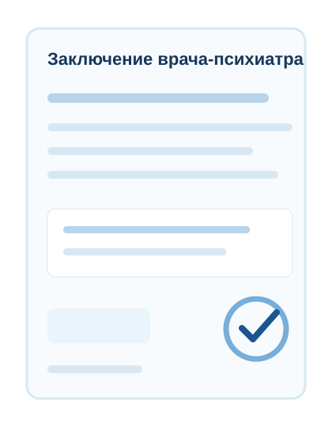

Пожилой продавец
Когда важно подтвердить, что человек понимает смысл сделки и её последствия.
Для сделок с недвижимостью в Москве и Московской области
Помогаем оценить состояние продавца перед подписанием документов и снизить риск последующих споров по сделке.
Расскажите о вашей ситуации — мы подскажем, какой формат подойдёт и можно ли организовать выезд к нужному времени.
02 · Ситуации
Проверка особенно важна, когда есть обстоятельства, из-за которых сделку в будущем могут попытаться поставить под сомнение.
Когда важно подтвердить, что человек понимает смысл сделки и её последствия.
Когда покупателю или юристу нужна дополнительная уверенность в ситуации.
Если есть вероятность споров между родственниками или наследниками.
Например, человек ведёт себя непоследовательно, тревожно, растерянно или неуверенно.
Когда нужно быстро организовать осмотр перед подписанием документов.
Если специалист по сделке советует дополнительно подтвердить состояние продавца.
Чем дороже сделка, тем внимательнее стоит относиться к каждому фактору риска.
Когда есть вероятность, что после сделки кто-то попытается оспорить решение продавца.
03 · Цена ошибки
При сделках с недвижимостью важно заранее учитывать риски, которые могут привести к конфликтам после подписания документов.
Если позже возникнет спор о том, понимал ли продавец значение своих действий, покупателю придётся защищать сделку уже после её завершения. Психиатрическое освидетельствование помогает получить медицинское заключение о состоянии продавца на момент осмотра и добавить к сделке важный документ.
Снизить риск перед сделкойОсвидетельствование не заменяет юридическую проверку сделки, но помогает снизить один из важных рисков — спор о состоянии продавца в момент подписания документов.
04 · Доверие
Команда клиники много лет работает с психиатрическими, психотерапевтическими и зависимыми состояниями. Поэтому мы умеем аккуратно и профессионально оценивать состояние человека в значимых жизненных ситуациях.
Спокойная экспертность и медицинская аккуратность.
Доктор Змиевской и команда клиники много лет работают со сложными клиническими случаями.
Освидетельствование проводят специалисты с медицинским образованием и клиническим опытом.
Услуга проводится официально, с оформлением необходимых документов.
При наличии свободного врача возможен выезд в день обращения.
Понимаем специфику сделок с недвижимостью: сроки, место подписания, участие риелторов, юристов и нотариусов.
Соблюдаем врачебную тайну и аккуратно работаем с персональной информацией.
05 · Процесс
Мы заранее уточняем детали сделки и подбираем удобный формат проведения.
Указываете дату сделки, место проведения и коротко описываете ситуацию.
Уточняем детали, срочность, формат и возможность выезда врача.
В клинику, к нотариусу, в банк, офис агентства или домой.
Врач беседует с человеком и оценивает его способность понимать смысл сделки и её последствия.
После освидетельствования вы получаете заключение врача и необходимые документы.
06 · Результат
После процедуры оформляется медицинское заключение, которое может стать частью документального пакета по сделке.

Заключение не является гарантией того, что сделку невозможно оспорить. Но оно помогает подтвердить состояние продавца на момент осмотра и снизить один из важных рисков.
08 · Стоимость
Если вы не знаете, какой вариант нужен в вашей ситуации, оставьте заявку — мы подскажем оптимальный формат.
Для стандартных ситуаций, когда продавец готов приехать в клинику заранее.
Для сделок, где важно провести освидетельствование непосредственно перед подписанием документов.
Для сделок с повышенным риском: пожилой продавец, наследственный объект, доверенность, конфликт родственников, высокая стоимость недвижимости.
Для сложных, дорогостоящих и конфликтных сделок, где требуется расширенный формат медицинской оценки.
08 · Для специалистов
Помогаем быстро и аккуратно организовать освидетельствование перед сделкой, если у клиента есть сомнения или объект требует дополнительной осторожности.
Мы понимаем, что в сделках с недвижимостью важны сроки, корректная коммуникация и аккуратное оформление документов.
Можно заранее согласовать дату и время выезда под сделку.
10 · FAQ
Да, если у врача есть свободное время. Оставьте заявку или позвоните нам — мы проверим возможность срочного выезда.
Да. Врач может приехать к нотариусу, в банк, офис агентства недвижимости, домой или в другое удобное место.
Освидетельствование проводится только с согласия человека. Если продавец отказывается, мы можем проконсультировать вас, как корректно обсудить этот вопрос с юристом, риелтором или участниками сделки.
Обычно освидетельствование занимает от 30 до 60 минут. В сложных случаях времени может потребоваться больше.
После освидетельствования оформляется заключение врача-психиатра. При необходимости предоставляются документы клиники.
Нет. Справки ПНД и НД показывают наличие или отсутствие наблюдения в диспансерах. Освидетельствование оценивает состояние человека на момент осмотра. Эти документы могут дополнять друг друга.
По договорённости сторон. Чаще инициатором выступает покупатель, риелтор или юрист, если хотят снизить риск последующих споров.
Специальная подготовка не требуется. Важно, чтобы человек понимал цель процедуры и дал согласие на её проведение.
11 · Финальный CTA
Мы подскажем, какой формат освидетельствования подойдёт и можно ли организовать выезд к нужной дате и времени.